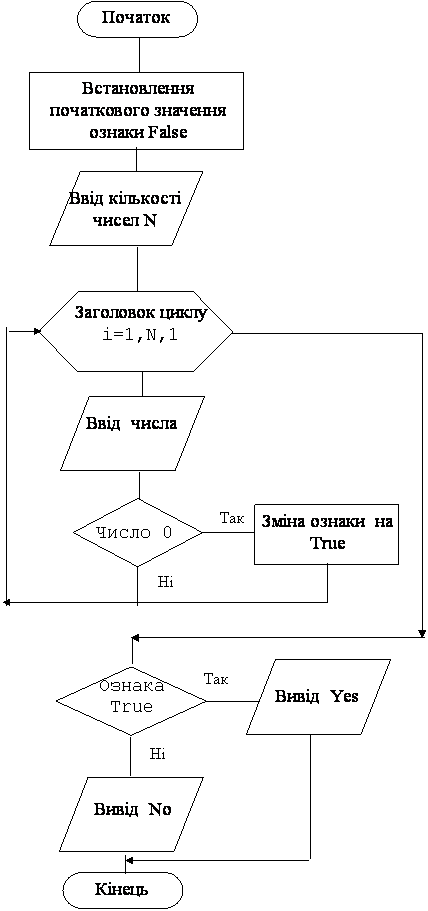

Назад
Зміст
Вперед
Задачі з використанням логічних змінних
Цей алгоритм використовується, якщо для деякої послідовності чисел потрібно на деяке запитання відповісти: „так” чи „ні”.
Приклад 1
Дано n цілих чисел. З’ясуйте, чи є в цій послідовності хоча б одне число 0.
Дано: кількість чисел та самі числа.
Знайти: Якщо серед чисел є 0, то надрукувати yes, якщо немає 0, то надрукувати no.
Змінні:
Вхідні:
- n – кількість чисел (цілого типу)
- a – число (цілого типу)
Вихідні:
- f – ознака (логічного типу). Якщо значення цієї змінної дорівнює true, то серед чисел є 0, якщо значення цієї змінної дорівнює false, то серед чисел немає 0.
Проміжні:
- i – параметр циклу (цілого типу)
Алгоритм
- Спочатку потрібно присвоїти початкове значення ознаці f:=false. Тобто вважаємо, що нулів серед чисел немає. Якщо зустрінемо нуль, змінимо це значення на протилежне.
- Вводимо n – кількість чисел, що будемо вводити. Це значення буде визначати кількість витків циклу.
- У циклі for i:=1 to n do у операторних дужках будемо виконувати такі дії:
- Оператор read(a) вводить число у змінну a.
- Якщо введене число 0, то змінюємо значення змінної на f:=true. Якщо введене число не 0, то нічого не робимо, тобто значення f не змінюється. Обов’язково використовувати неповний умовний оператор!
- Чисел буде n. Але кожне наступне число ми будемо вводити в одну і ту ж змінну, затираючи попереднє.
- Коли цикл закінчиться, тобто будуть введені всі n чисел, значення змінної f (ознаки) або залишиться початковим false (якщо серед чисел немає 0), або зміниться на true (якщо серед чисел є один чи декілька 0).
- Після завершення циклу потрібно перевірити значення змінної f.
- Якщо f=false, то надрукувати no.
- Якщо f=true, то надрукувати yes.
- Для перевірки значення логічної змінної можна не використовувати операцію «=». Тому:
- if f відповідає if f=true
- if not f відповідає if f=false.
Блок–схема програми

Програма
var i,n,a:integer; f:boolean;
begin
f:=false; read(n);
for i:=1 to n do
begin
read(a);
if a=0 then f:=true;
end;
if f then writeln('yes')else writeln('no');
end.
|
Результати роботи програми
| № | Ввід | Відповідь | Пояснення |
|---|
| 1 | 5
1 2 3 4 5 | No | 5 – кількість чисел. 1 2 3 4 5 – самі числа. Серед них немає 0, тому No |
| 2 | 4
1 3 7 0 | Yes | 4 – кількість чисел. 1 3 7 0 – самі числа. Серед них є 0, тому Yes |
| 3 | 6
1 0 2 0 0 9 | Yes | 6 – кількість чисел. 1 0 2 0 3 9 – самі числа. Серед них є три 0, тому Yes |
Приклад 2
Дано n чисел. З’ясуйте, чи всі вони 0.
Дано: кількість чисел та самі числа.
Знайти: Якщо всі числа 0, то надрукувати yes, якщо є не 0, то надрукувати no.
Змінні:
Вхідні:
- n – кількість чисел (цілого типу)
- a – число (цілого типу)
Вихідні:
- f – ознака (логічного типу).
Якщо значення цієї змінної дорівнює true, то всі числа 0, якщо значення цієї змінної дорівнює false, то серед чисел є не 0.
Проміжні:
- i – параметр циклу (цілого типу)
Алгоритм
- Спочатку потрібно присвоїти початкове значення ознаці f:=true. На відміну від попереднього прикладу вважаємо, що всі числа нулі. Тоді якщо зустрінемо не нуль, змінимо це значення на протилежне.
- Вводимо n – кількість чисел, що будемо вводити. Це значення буде визначати кількість витків циклу.
- У циклі for i:=1 to n do у операторних дужках будемо виконувати такі дії:
- Оператор read(a) вводить число у змінну a.
- Якщо введене число не 0, то змінюємо значення змінної на f:=false. Якщо введене число 0, то нічого не робимо, тобто значення f не змінюється.
- Коли цикл закінчиться, тобто будуть введені всі n чисел, значення змінної f (ознаки) або залишиться початковим true (якщо всі числа нулі, тобто серед чисел немає не 0), або зміниться на false (якщо серед чисел є одно чи декілька не 0).
- Після завершення циклу потрібно перевірити значення змінної f.
- Якщо f=false, то надрукувати no.
- Якщо f=true, то надрукувати yes.
Програма
var i,n,a:integer; f:boolean;
begin
f:=true; read(n);
for i:=1 to n do
begin
read(a);
if a<>0 then f:=false;
end;
if f then writeln('yes')else writeln('no');
end.
|
Результати роботи програми
| № | Ввід | Відповідь | Пояснення |
|---|
| 1 | 5
1 2 3 4 5 | No | 5 – кількість чисел. 1 2 3 4 5 – самі числа. Вони всі не 0, тому No |
| 2 | 4
1 0 7 0 | No | 4 – кількість чисел. 1 0 7 0 – самі числа. Серед них є не 0, тому No |
| 3 | 6
0 0 0 0 0 0 | Yes | 6 – кількість чисел. 0 0 0 0 0 0 – самі числа. Вони всі 0, тому Yes |
Правило використання ознаки
При складанні програм з використанням ознаки потрібно пам’ятати:
- Перед циклом (перед перевіркою даних) ознаці потрібно присвоїти початкове значення.
- У циклі, в процесі перевірки ознака може змінити своє значення тільки на протилежне. Вона не може змінюватись «туди сюди».
- Після завершення циклу значення ознаки потрібно перевірити. Це значення може залишитися початковим, а може змінитися на протилежне.
|
Варіанти задач
- Дано n символів. Чи є в цій послідовності хоча б один символ „_”?
- Ввести з клавіатури n будь-яких чисел. Чи є серед цих n чисел від’ємні числа?
- Дано n цілих чисел. З’ясуйте, чи є в цій послідовності хоча б одне число, що закінчується цифрою 5.
- Дано n цілих чисел. З’ясуйте, чи є в цій послідовності хоча б одне двохзначне число, що складається з однакових цифр.
- Ввести з клавіатури число x та n будь-яких чисел. Чи є серед цих чисел число x?
- Дано n символів. Чи є в цій послідовності цифри?
- Дано n символів. Чи є в цій послідовності пробіли?
- Дано n цілих чисел. Чи всі вони парні?
- Дано n цілих чисел. Чи всі вони додатні?
- Дано n натуральних чисел. Чи всі вони закінчуються цифрою 3?
- Ввести з клавіатури n будь-яких чисел. Чи всі вони трьохзначні?
- Дано n символів. Чи всі вони цифри?
- Дано n символів. Чи всі вони латинські літери?
- Дано n символів. Чи всі вони російські літери?
- Дано n цілих чисел. Чи всі вони однакові?
- Ввести з клавіатури число x та n будь-яких чисел. Чи всі ці числа дорівнюють x?
Назад
Зміст
Вперед